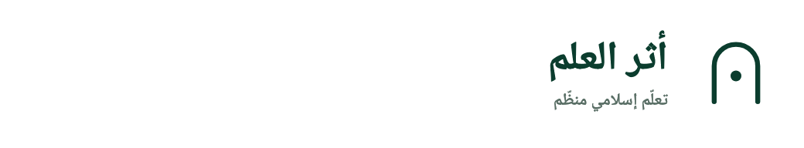
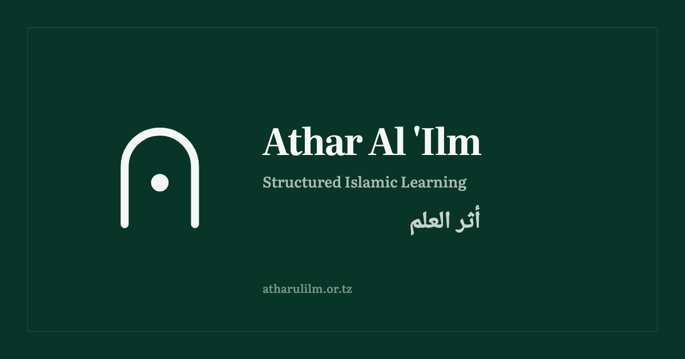

Primary mark
Transparent SVG / PNG on light and brand green.
App / PWA icons
180 · 192 · 512 app · 512 maskable
icon-180
icon-192
icon-app-512
icon-maskable-512
Favicons
favicon.svg
32
64
Wordmarks
EN (Baskerville lockup) and AR (Naskh, RTL).

Open Graph · 1200×630
